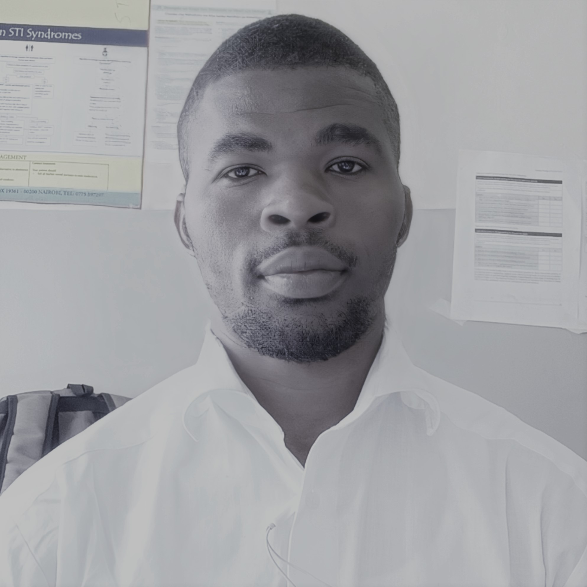

Edwin Chavulimu
Summary
I am a trained clinician with 3 years of experience in chronic diseases management (HIV/TB).
Other than my clinical work, I love writing papers and programs.
This is my first capstone project.
Certification
Work Experience
November 2020 to November 2021
- Clinical officer Ampath Busia County
- November 2022 to date : USAID Dumisha Afya
Academic Certifications
- Bachelor's degree Health science (on going)
- Diploma in Clinical Medicine and Surgery- 2018
- Kenya Certificate of Secondary Education- 2011
Schools I attended
- University of the People
- Kenya Medical Training college
- Kiborgok High School
- Mwein primary School
Languages
- English ⭐⭐⭐⭐⭐
- Kiswahili ⭐⭐⭐⭐⭐
- French ⭐⭐